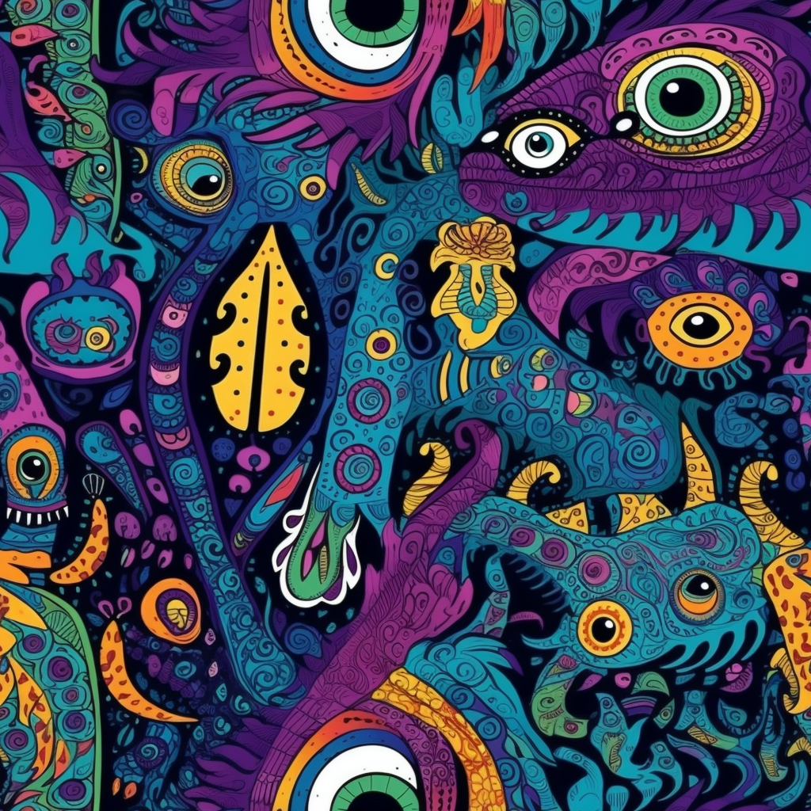

| Gambar |
|---|
| bakso, food photography |
| banana and strawberries, splash photography --ar 3:2 |
| shark shaped travel bag, product design photography --ar 3:2 |
| a model wearing mondrian printed fur, fashion photography, vogue --ar 2:3 |
| cartoon flying pig, children coloring-page |
| fish market, knolling --ar 3:2 |
| isometric farm-animals icons set |
| medieval jousting tournament, 16-bit --ar 3:2 |
|  |
| monster paisley pattern --tile |